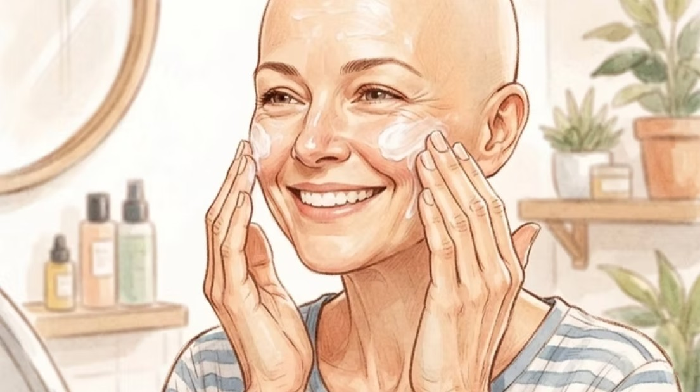
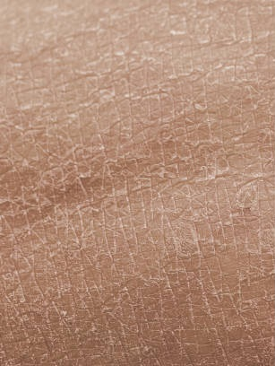
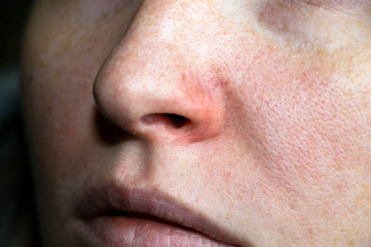

COMPRENDRE SA PEAU
Quels problèmes de peau peut-on rencontrer sur le visage pendant un cancer ?
Les traitements contre le cancer peuvent entraîner différents changements au niveau de la peau. Sécheresse, tiraillements, rougeurs, démangeaisons, éruptions ou modifications du teint peuvent apparaître pendant ou après certains traitements.
Ces changements ne sont pas systématiques et leur intensité varie d’une personne à l’autre, notamment selon le traitement reçu et la sensibilité de la peau.
À travers Oncodermia, je souhaite vous aider à mieux comprendre ces modifications afin que vous puissiez identifier ce qui arrive à votre peau et en parler plus facilement avec votre équipe soignante.
Chaque traitement et chaque personne sont différents. Cet article est informatif et ne remplace pas l’avis de votre oncologue, dermatologue, médecin ou pharmacien.

Image générée par IA
Pourquoi ma peau change-t-elle pendant les traitements ?
La chimiothérapie, la radiothérapie et certaines thérapies ciblées peuvent modifier le fonctionnement habituel de la peau et fragiliser sa barrière cutanée.
La peau peut alors devenir plus sèche, plus sensible et plus réactive. Des produits qui étaient auparavant parfaitement tolérés peuvent également devenir inconfortables.
Selon le traitement, différentes manifestations peuvent apparaître : sécheresse, rougeurs, démangeaisons, éruptions ou modifications de la pigmentation.
Observez votre peau et signalez à votre équipe médicale tout changement inhabituel, important, douloureux ou qui évolue rapidement.
1. La sécheresse et les tiraillements
La sécheresse cutanée est l’une des manifestations que l’on peut rencontrer pendant certains traitements.
Vous pouvez ressentir :
- une sensation de tiraillement ;
- une peau plus rêche ou rugueuse ;
- des petites desquamations ;
- une sensation d’inconfort après le nettoyage ;
- des démangeaisons associées à la sécheresse ;
- des zones particulièrement sèches autour du nez ou de la bouche.
La peau peut également sembler moins souple et plus fragile.

2. Les rougeurs et la sensibilité
Pendant les traitements, certaines personnes constatent que leur peau devient plus sensible ou réactive.
Le visage peut présenter :
- des rougeurs ;
- des sensations de chaleur ;
- des picotements ;
- des échauffements ;
- une sensibilité accrue au toucher.

Vous pouvez également avoir l’impression que votre peau « ne supporte plus rien », alors que vous utilisiez auparavant les mêmes produits sans problème. Cette hypersensibilité peut être temporaire ou persister pendant une partie du parcours de soins.
3. Les démangeaisons
Les démangeaisons, également appelées prurit, peuvent accompagner une peau sèche ou irritée.
Elles peuvent être légères et occasionnelles, mais parfois devenir suffisamment importantes pour perturber le sommeil ou le quotidien.
Il est important d’éviter autant que possible de gratter les zones concernées : le grattage peut davantage fragiliser la peau et provoquer des lésions.
Si les démangeaisons sont importantes, apparaissent brutalement ou s’accompagnent d’une éruption importante, parlez-en à votre équipe médicale.
4. Les éruptions et les imperfections
Certains traitements anticancéreux peuvent provoquer des éruptions cutanées.
Elles peuvent prendre différentes formes :
- petits boutons ;
- rougeurs ;
- plaques ;
- peau qui semble plus granuleuse ;
- éruptions plus importantes.
Il est important de ne pas considérer automatiquement ces manifestations comme une « acné classique ».
Selon le traitement reçu, l’origine et la prise en charge peuvent être différentes. N’utilisez donc pas automatiquement un traitement anti-acnéique ou exfoliant sans demander conseil à un professionnel de santé.
Une nouvelle éruption qui apparaît pendant un traitement doit être signalée à l’équipe qui vous accompagne, notamment lorsqu’elle est importante, douloureuse ou évolue rapidement.
5. Une peau plus sensible au soleil
Certains traitements peuvent rendre la peau plus sensible aux rayonnements UV.
Vous pouvez alors constater une sensibilité accrue lors d’une exposition au soleil ou voir apparaître plus facilement certaines modifications de pigmentation.
La protection solaire prend donc une place importante dans la prévention des agressions supplémentaires de la peau.
6. Des changements de pigmentation et de teint
Le cancer et ses traitements peuvent également s’accompagner de modifications de la couleur de la peau.
Vous pouvez notamment remarquer :
- un teint qui semble plus terne ;
- des zones plus foncées ;
- des taches pigmentaires ;
- des rougeurs persistantes ;
- une couleur de peau moins uniforme.
Ces changements peuvent avoir différentes origines et ne doivent pas être systématiquement attribués au traitement sans avis médical.
Ils peuvent néanmoins être particulièrement visibles sur le visage et parfois avoir un impact sur l’image que l’on a de soi.
Et si je ne reconnais plus ma peau ?
Les changements cutanés peuvent être difficiles à vivre.
Le visage est une partie très visible de notre corps et participe énormément à notre image de soi. Voir apparaître des rougeurs, une sécheresse importante, des imperfections ou des changements de pigmentation peut donc être déstabilisant.
Et les changements ne concernent pas uniquement la peau. La perte ou la modification des cheveux, des sourcils et des cils peut également transformer l’apparence du visage et rendre le miroir parfois difficile à regarder.
Pouvoir retrouver une sensation de confort, prendre quelques minutes pour soi ou simplement avoir des informations permettant de comprendre ce qui arrive à son corps peut contribuer à mieux vivre cette période.
À travers Oncodermia, je souhaite justement vous accompagner sur cette dimension : comprendre les changements de votre peau, mais aussi vous aider à continuer à prendre soin de vous.
LE PETIT MOT D’ONCODERMIA
Comprendre sa peau pour mieux l’accompagner
Votre peau peut évoluer au fil des traitements. L’essentiel est de l’observer, de respecter sa sensibilité et de demander conseil à votre équipe soignante lorsque quelque chose vous inquiète ou change brutalement.